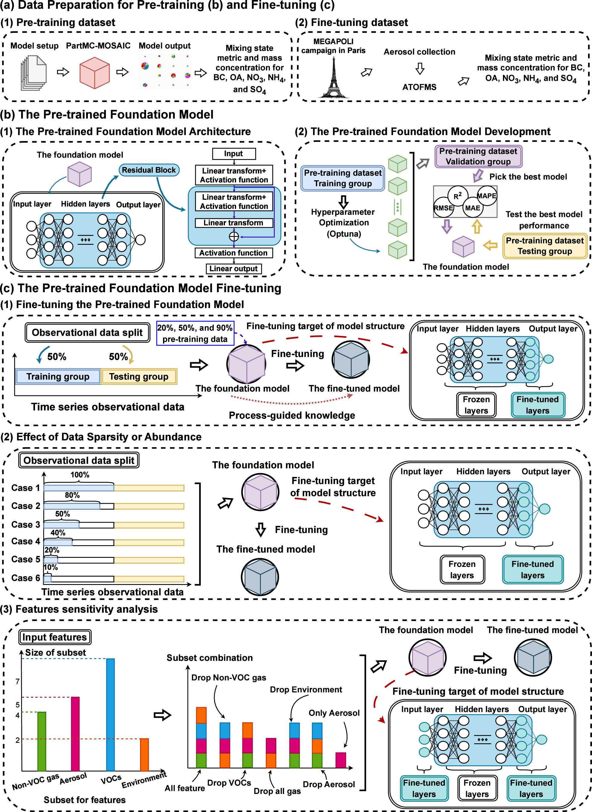

Aerosol mixing state observations face severe spatiotemporal gaps due to high equipment costs and the technical complexity of in-situ measurements. While particle-resolved models serve as high-fidelity benchmarks, their real-world application is often limited by a lack of accurate emission inventories and detailed input data that truly reflects localized environmental conditions. Capturing pollution spikes and dynamic temporal changes remains a major barrier to reliable climate and health impact assessments.
We redefine aerosol emulation as a general task and treat real-world estimation as a specialized downstream application. Our approach utilizes a Foundation Model pretrained on approximately 25,000 particle-resolved simulation samples from the PartMC-MOSAIC model. This foundation encodes process-guided physical knowledge before being fine-tuned using roughly 390 high-value observational samples from the MEGAPOLI winter campaign in Paris, effectively bridging the gap between theoretical modeling and real-world distributions.

Integrated framework bridging particle-resolved stochastic simulations (~25,000 samples) with urban field observations. Click the image to toggle high-resolution scroll view.
The fine-tuned foundation model achieved a testing R² of 0.64, more than tripling the performance of standard AutoML tree-based models (R² 0.19) and vastly outperforming baseline Linear Regression (R² 0.07).
Despite significant temporal distribution drift in field data, the model maintained exceptional stability. Swapped temporal order experiments showed the R² variation was restricted to only about 6%, proving its ability to capture common features across time.